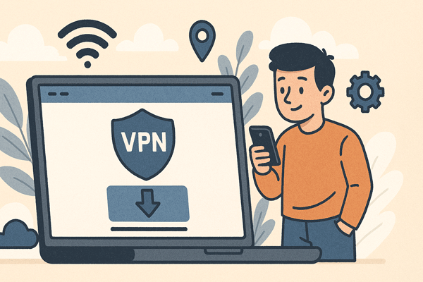

博客列表

一键加密上网｜VPN让信息传输更安全
在信息化社会，网络已经成为人们生活中不可或缺的一部分。无论是社交、学习还是办公，互联网都在发挥着重要作用。然而，随之而来的信息安全问题也越来越严重。黑客攻击、数据窃取、隐私泄露等事件层出不穷，给每一位用户都带来了隐患。那么，如何才能在保证高效上网的同时，保护自己的信息安全呢？答案就是——VPN。一键加密上网，保障数据传输安全，已经成为现代用户不可缺少的工具。
2025年8月30日
上网隐私保护全解｜VPN为何不可或缺
在数字化时代，上网已经成为我们生活中不可或缺的一部分。从日常沟通到远程办公，从购物支付到娱乐影音，几乎所有行为都依赖互联网。然而，随之而来的问题是：我们的上网隐私是否得到了真正的保护？在数据泄露频发、黑客攻击频繁的今天，如何保障个人信息不被滥用，已经成为用户关注的焦点。
2025年8月30日
隐私保护从这里开始｜一键开启加密上网
随着互联网的普及，我们在享受便利的同时，也面临着越来越多的隐私风险。从公共 WiFi 下的账号窃取，到跨境访问中的信息泄露，再到广告追踪带来的隐私暴露，用户亟需一款能够保障信息安全的工具。快连VPN作为下载站推荐的产品，凭借一键加密上网、稳定高速的连接能力，为用户打造了一个可靠的隐私保护环境。本文将深入探讨快连VPN如何帮助用户守护隐私，并提供详细的下载安装与使用指南。
2025年8月28日
游戏玩家专属加速器｜低延迟畅玩海外服务器
在全球化的游戏环境中，越来越多的玩家希望体验海外服务器的乐趣，例如国际服 MMORPG、竞技类射击游戏以及全球发行的热门大作。然而，跨境网络往往会遇到延迟高、卡顿严重甚至无法登录的问题。此时，一款稳定高速的VPN工具就成为游戏玩家的刚需。快连VPN作为下载站推荐的产品，凭借全球加速节点和低延迟的传输优势，为玩家提供了畅玩海外服务器的最佳体验。本文将为大家详细介绍快连VPN如何成为游戏玩家的专属加速器。
2025年7月16日

出海必备的网络助手｜轻松解锁国际应用与网站
在全球化发展的浪潮中，越来越多的个人与企业开始走向国际市场。无论是跨境电商、海外留学，还是远程办公与国际投资，网络环境都成为决定效率和体验的关键因素。此时，一款稳定、安全的VPN工具就显得尤为重要。快连VPN作为下载站推荐的产品，凭借高速线路与全球节点覆盖，成为众多用户出海时的必备助手。本文将全面介绍快连VPN如何帮助用户轻松解锁国际应用与网站，并附上下载与使用的完整指南。
2025年6月18日
稳定高速的VPN工具｜全球线路随时切换
在现代互联网环境中，网络速度与安全性越来越受到用户关注。无论是跨境电商、远程办公、学术科研，还是娱乐与游戏，VPN 已经成为不可或缺的工具。快连VPN 作为一款稳定高速的VPN软件，凭借全球线路覆盖和一键切换功能，赢得了大量用户的青睐。本文将全面介绍快连VPN 的优势、下载与安装流程、应用场景以及安全使用建议，帮助用户快速掌握这款工具的使用方法。
2025年5月13日